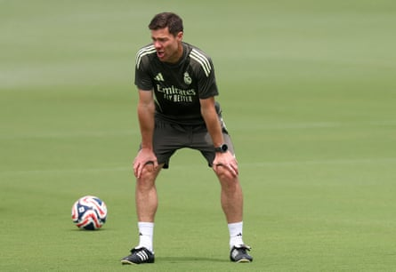

D ani Carvajal misses his family. The good news is that in return he’s about to become reacquainted with something he has missed as much. For some players, this is a competition too far, played on poor pitches in half-empty stadiums and suffocating heat, something they could do without, but it has been good for Real Madrid’s captain, something to aim at.
Now, 270 days later and 4,400 miles away, just as the Club World Cup gets real, he is back to face Juventus in the last 16 in Miami. “And I know what I’m like: if they let me loose, there’ll be no fear,” he says.
Carvajal has not played since October 2024, when in the final moments of Villarreal’s visit to the Santiago Bernabéu he tore the anterior cruciate ligament, the fibular collateral ligament and the popliteus tendon in his right knee. At 32 years old, a European champion with club and country, fourth in the Ballon d’Or three weeks later, it came at the worst time, or so it seemed. Carvajal, though, believes it came at the best moment, personally and professionally – which, in the end, go together in a long process that has been psychological as well as physical. Now here he is at Madrid’s Palm Beach HQ before training. Just one more session before he is back in the squad.
“If it had happened when I was younger, I think I would have gone over and over it much more, it would have eaten at my mind,” Carvajal says. “Until you go through it, you don’t know the impact. But it happened at a mature moment when thanks to my family, my kids, I have a much more structured life, which has alleviated [the process] and helped me recover better. If I had been younger, without my wife, I would have worried more, wondered if I was really going to be come back 100%.”
The Club World Cup helped. “It has been very good for me to have an objective, to be able to say: ‘I want to get there.’ Because if not, I would have reached fitness on the summer [with nothing happening]. Maybe [in terms of performance level] it would have been better for this competition to have fallen next year or the one after, when I could have started on the same level as everyone else, but I will never know that. I have adapted to the circumstances and it has been very good for me to be here, to be back with my teammates, train fully. It’s been two weeks now with them and, thank God, I am ready.”
“I have had a very stable recovery, very even. I have been setting very, very short-term objectives and also trying to break the injury-recovery routine when I could, with my family and kids, enjoying being with them. Whether planned or not, you’re not playing, not travelling, and I have been able to create a connection with them that’s been very special, really spectacular. I said to my wife that I have never missed anyone like I have missed them in this trip.
Xabi Alonso during training in the US for the Club World Cup.Photograph: Hannah McKay/Reuters
“There are moments when it’s a pain being injured but I woke up every day feeling that I had the energy and happiness to take it on. If I needed to go to the gym, or use a crutch to walk, well, you do it. I have managed it very well. I thought I would be climbing the walls but, far from it: I approached every phase, every challenge, with an enthusiasm.
“There has been no complications in the knee. You know it’s practically a year before you’re in perfect physical condition, until you have that sharpness; understanding that is the most important thing, not to rush, not to hurry. It’s been almost nine months.
“I took this competition as a challenge, an objective, so that I could have a target but always being realistic, aware of the situation I was in. A month and a half ago, I would have said I can’t see it [returning to the team], because I felt I wasn’t ready but now I see myself as ready to compete. It’s nice, I’ve had lots of sessions, I don’t have any fear, I don’t have any hesitation to go in hard, to put my foot in…”
Carvajal’s injury played a part in Madrid finally being convinced of the need to sign Trent Alexander-Arnold, but that does not necessarily make it a case of one or the other, nor that the Englishman will automatically be first choice – although he will start in Miami. Xabi Alonso’s structure may open an opportunity as a third centre-back on the right side and if there is one thing that has always defined Carvajal it is a fierce competitiveness. Alexander-Arnold won’t simply be handed his spot, that’s for sure. The knowing smile when Carvajal talks about new signings tells you that.
“Trent has adapted phenomenally well, he has got on with everyone fantastically,” he says. “He has been super friendly: when we have had an afternoon off, he has come with everyone to eat, he seems a very, very good lad. He already knew Jude [Bellingham] but it’s with everyone. And, professionally, it’s normal: at every team there are new signings, new players, and I took that as a personal challenge too: I love to compete, I love to have challenges in front of me. I hope that healthy competition can make the team even better.
“As for the position: I don’t know. I haven’t thought about it, because if the manager asks me to play on the left wing I play in the left wing. It’s not something that concerns me, far from it. I just want to help. I’ve played centre-back, left-back, right-back … if it’s in goal, I’m available. It’s been nine months but I feel good, I’m ready.”